젤리 몰 v18.4예요. 인게임은 실험실 「귀환 칸」 판(실험 48~53)만 바뀌었고, 다른 판과 본편은 그대로예요. 앱을 닫았다 다시 열면 받아져요.
폰에서 직접 바꿔 보기: 실험실 → 「귀환 칸」 탭 아래에 화면 색(밤 · 하늘 · 민트 · 크림 · 사탕)과 핍 자리(챔버 위 · 귀환 칸 옆 · 없음) 단추를 달았어요. 고른 값은 저장돼요.
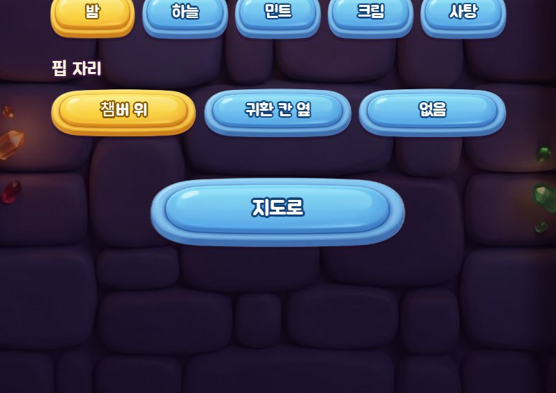
블록 디자인은 그대로 두고 핍만 한 곳에 넣었어요. 핍은 자리만 차지하지 않고 판 상태에 따라 표정이 바뀌어요.
핍이 발사구 위에 앉아 대기 상자를 챔버에 던져 넣어요. 원래 게임 설정(핍의 양손이 상자를 넣어 줌)을 그대로 살린 자리예요. 화면 위쪽 가운데라 눈에 잘 띄고, 판을 가리지 않아요.
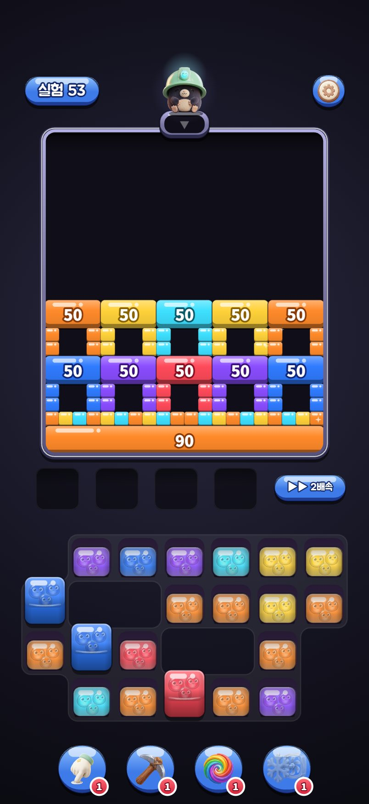
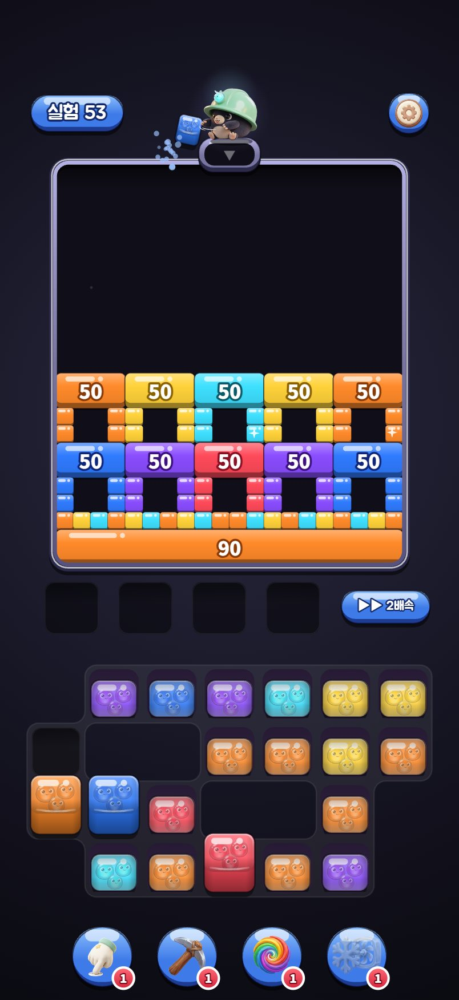
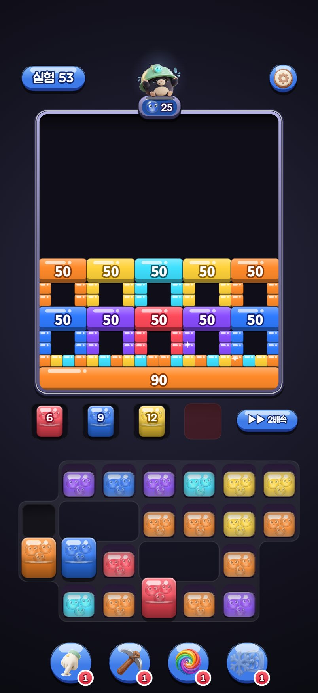
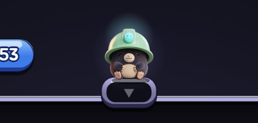
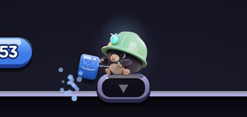
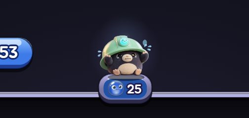
핍이 귀환 칸 오른쪽 끝에 앉아 칸을 지켜봐요. 칸이 차면 바로 옆에서 겁먹어서 위험이 잘 읽혀요. 대신 2배속 단추가 위쪽(설정 왼쪽)으로 올라가요.
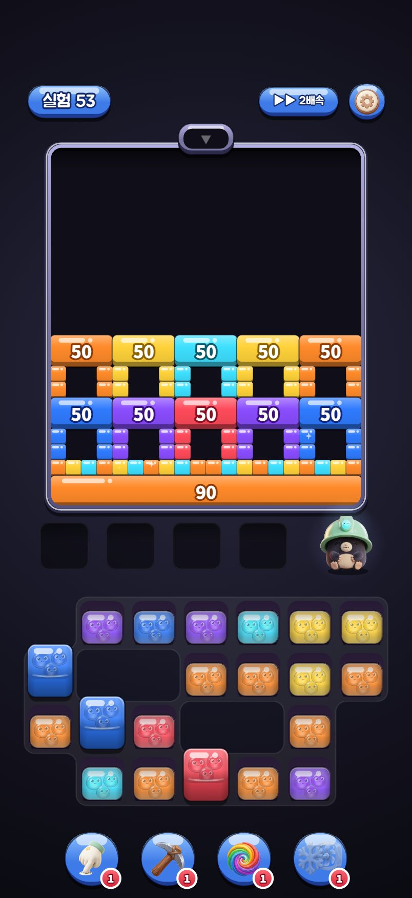
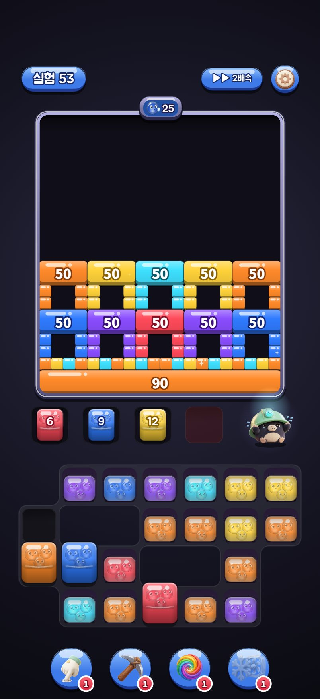
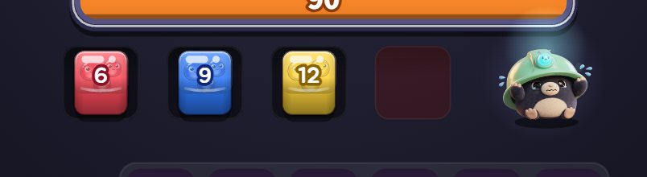
지금의 어두운 색(밤)은 그대로 두고, 밝은 색 4개를 더 만들었어요. 블록 색이 바탕에 묻히지 않도록 하늘 · 민트 · 사탕은 챔버 안을 짙은 창으로 두었어요. 크림은 챔버까지 통째로 밝혔어요. 단추 색도 바탕에 맞춰 바꿨어요.
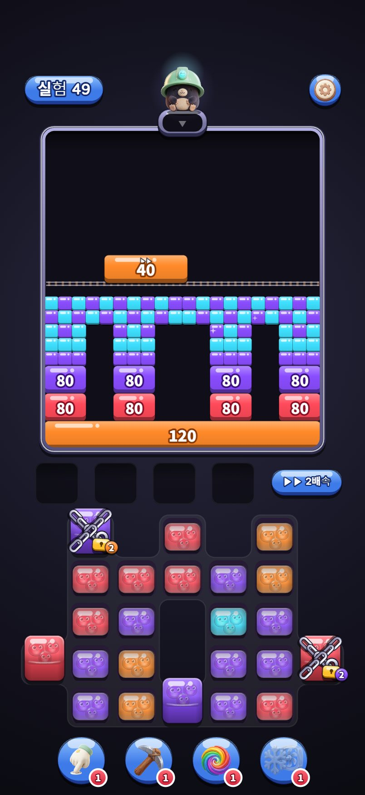
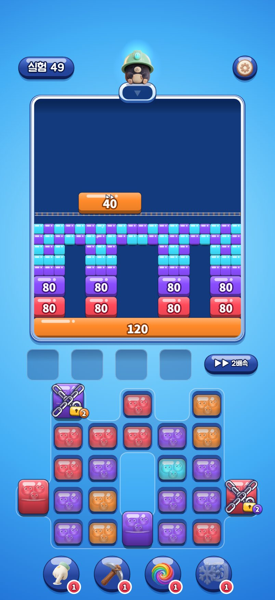
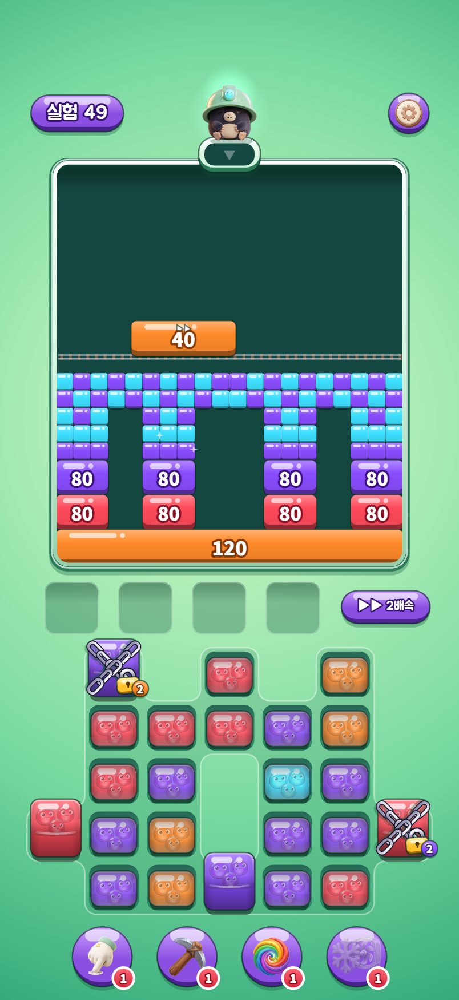
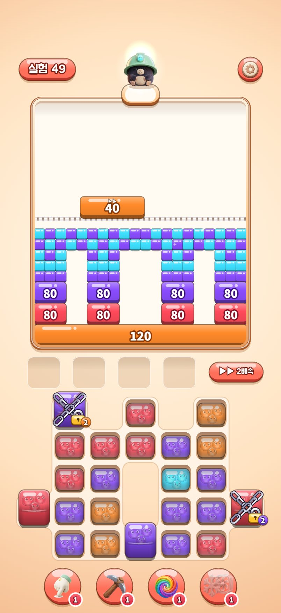
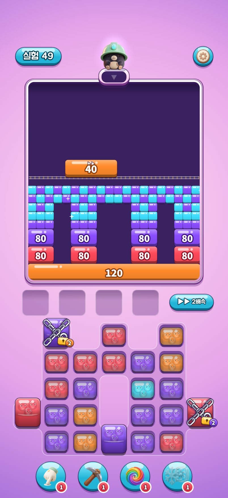
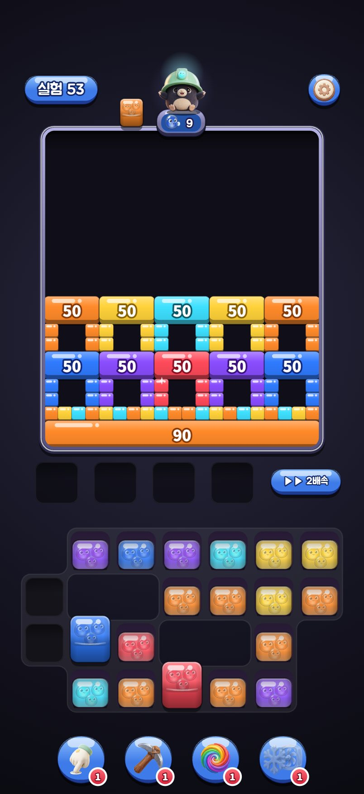
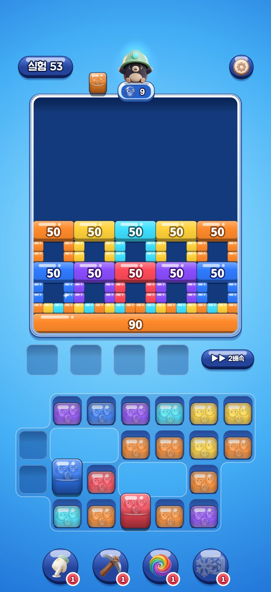
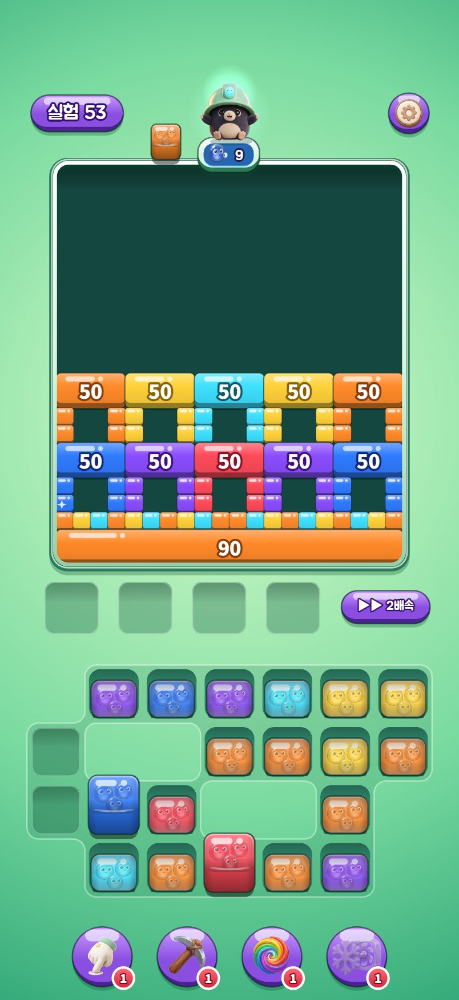
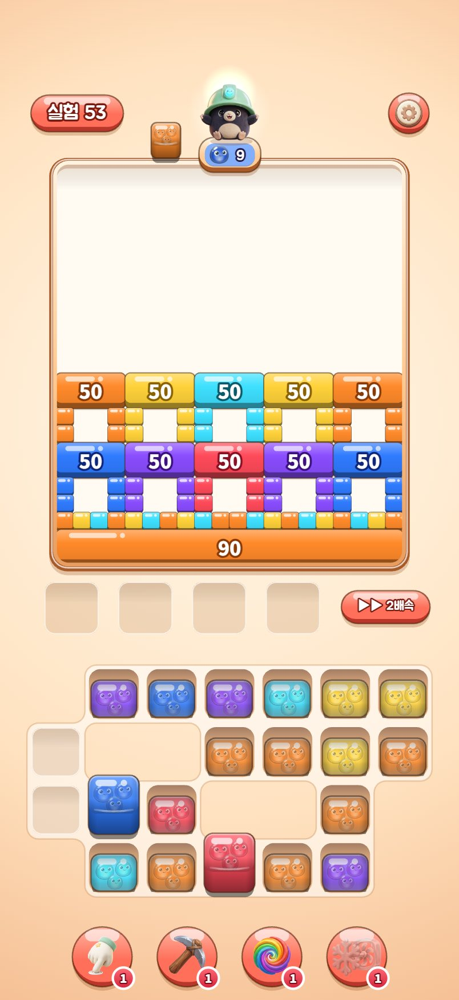
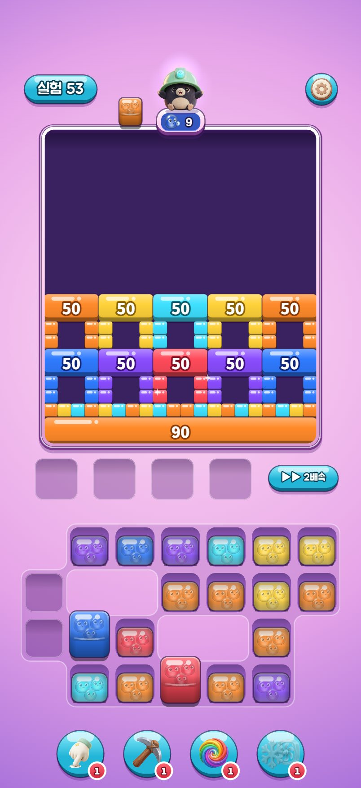
공통 원칙은 세 가지예요.
단추, 노드, 칩은 인게임 클레이 재질(왼쪽 위 빛, 두께 띠, 흰 반사, 짙은 윤곽)로 맞췄어요. 핍, 상자, 아이콘은 게임에 있는 그림을 그대로 썼어요. 각 시안 아래 「폰에서 열기」를 누르면 움직이는 화면으로 볼 수 있어요.
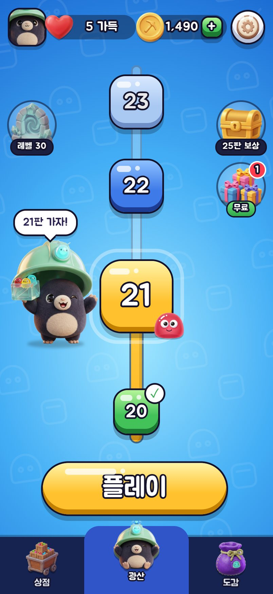
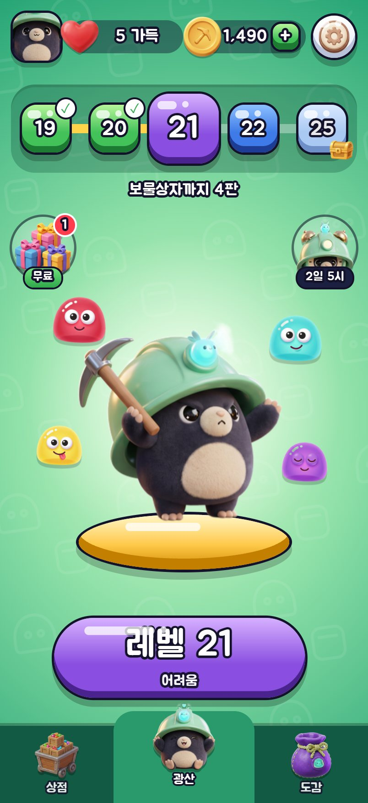
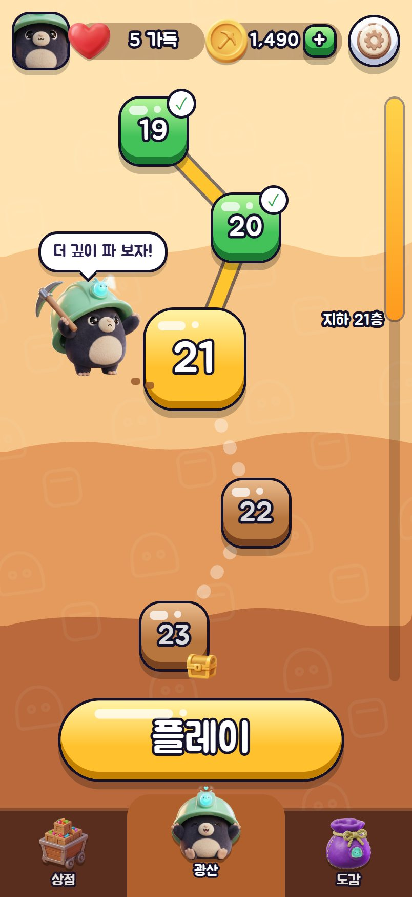
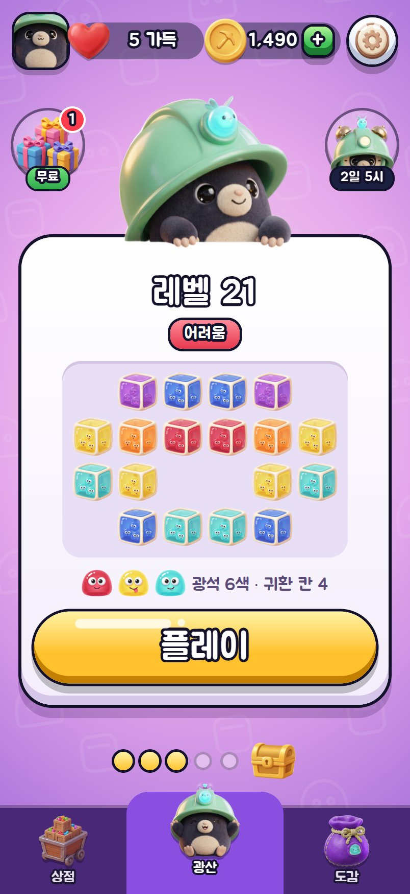
추천 = A. 픽셀플로우처럼 스테이지가 먼저 보이고, 핍은 지금 판 옆에 서 있어서 '내가 여기 있다'는 표시 역할도 해요. 캐릭터 비중을 더 키우고 싶으면 B, 광산 느낌을 살리고 싶으면 C예요. A의 길을 C처럼 아래로 내려가게 섞는 것도 가능해요.
확인한 화면: 인게임은 크롬 402px · 360px · 아이폰 엔진(WebKit) 402px, 로비는 크롬 402px · 360px · 아이폰 엔진 · PC 넓은 화면이에요. 오류 0개였어요. 실제 아이폰에서는 아직 못 봤어요.